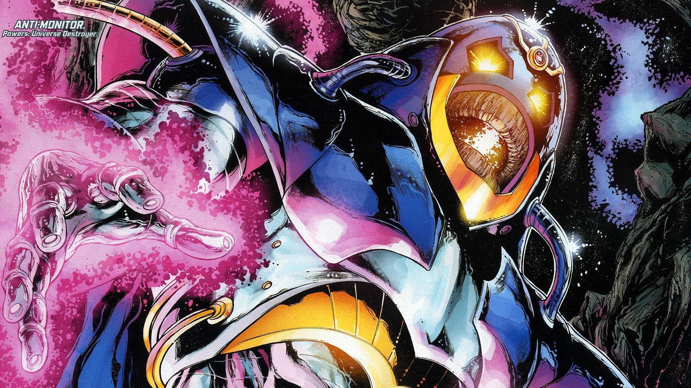

The destroyer of universes — the Crisis made flesh.
The Anti-Monitor
Before the Anti-Monitor, the DC Universe was infinite — countless parallel Earths, each with its own heroes. The Anti-Monitor, born Mobius on the antimatter moon of Oa, set out to collapse all of it into a single antimatter universe under his rule. In Crisis on Infinite Earths (1985–86), Marv Wolfman and George Pérez’s twelve-issue epic, he succeeded in destroying nearly everything: whole universes blinked out, and heroes died by the dozen. The Crisis ended with a single, merged universe — and the Anti-Monitor seemingly destroyed at the dawn of time.
Death, for the Anti-Monitor, was a suggestion. He returned during the Sinestro Corps War (2007), reborn and warring across the stars, before falling again. His corpse came to rest on Ryut, the dead world of Sector 666 — and in Blackest Night (2009–10), Nekron raised that corpse as the Black Lantern Central Power Battery, turning the universe’s greatest destroyer into death’s own engine. Few villains get to end two different worlds; the Anti-Monitor managed it twice over.
What makes him endure isn’t personality — he has barely any — but scale. The Anti-Monitor is entropy with a face: the argument that everything ends, made flesh. Every cosmic Green Lantern story since 1985 has lived in the crater he left behind.
Keep exploring
The Anti-Monitor — DC Comics, via CBR. Non-commercial fan tribute.